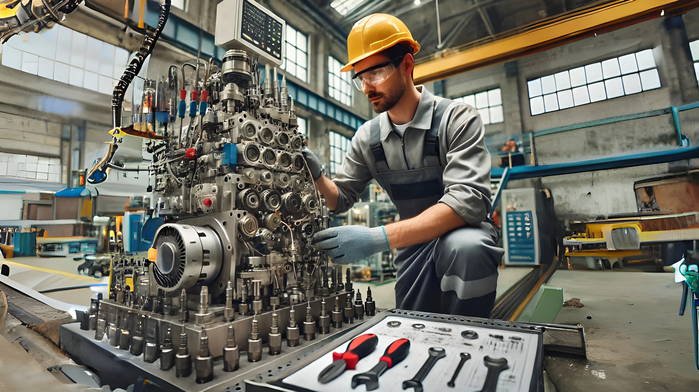
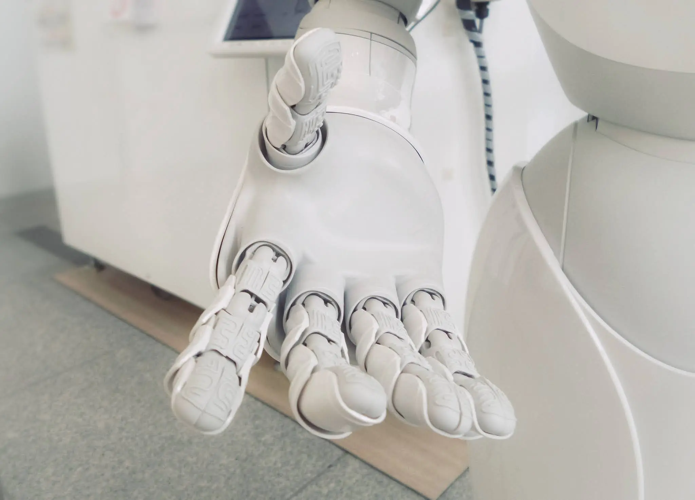

// FORMACIÓN Y DESARROLLO
Técnico electromecánico
Estoy convencido de la importancia de tener un trabajo que no solo ayude a construir una carrera estable, sino también a ofrecer soluciones prácticas y concretas en la vida cotidiana.
16 de diciembre de 2007 · 1 minuto de lectura

Implica algo más que solo tener un trabajo. Esta base es fundamental para comprender el funcionamiento de las máquinas, sistemas y energía que impulsa la vida. Con el paso del tiempo, he descubierto que adquirir habilidades en un campo técnico no solo me ha permitido afrontar desafíos difíciles, sino también tener la seguridad de encontrar respuestas rápidas y eficaces a situaciones problemáticas.
Este conocimiento práctico es lo que marca la diferencia en un entorno donde la teoría no siempre es suficiente. Saber cómo funciona una máquina por dentro y cómo interactúan sus componentes es clave para garantizar que todo funcione de manera óptima.
El valor de aprender habilidades técnicas
Tener un buen dominio de las habilidades técnicas es crucial para mantenerse actualizado y competitivo. He obtenido habilidades en ensamblar, cuidar y arreglar maquinas, garantizando el cumplimiento de las regulaciones de seguridad en cada sistema. Mi atención está puesta en:
- Detección y solución de problemas: Identificar y arreglar fallas en equipos eléctricos y mecánicos, garantizando la menor cantidad de interrupciones en los procesos industriales.
- La estrategias: Debe estar establecida para prevenir y solucionar problemas, asegurando la operación continua y eficiente a través de mantenimiento preventivo y correctivo.
- Puesta en funcionamiento de equipos: Garantizar que las instalaciones y equipos recién adquiridos estén en funcionamiento y cumplan con todas las normas requeridas.
He observado que las habilidades técnicas pueden generar múltiples oportunidades en diversos ámbitos, desde industrias convencionales hasta sectores innovadores como las energías renovables y la automatización industrial. Aprender estas habilidades te permite no solo estar al día con las nuevas tecnologías, sino también ser fundamental para cualquier empresa.
Adaptabilidad y aprendizaje
La constante evolución del entorno tecnológico hace necesario mantener una actitud de aprendizaje constante. La electromecánica comprende un amplio ámbito que engloba electricidad, mecánica y control automatizado. Durante mis estudios, he adquirido habilidades para ajustarme a tecnologías y métodos nuevos, desde sistemas mecánicos convencionales hasta la administración de sistemas automatizados e incorporación de tecnología en maquinaria industrial.
Siempre estoy en la búsqueda de maneras de mejorar mis conocimientos y habilidades, ya que es necesario mantenerse actualizado en el sector para estar al tanto de las nuevas tendencias y herramientas.
Mi compromiso con el trabajo técnico
Tengo la meta de continuar mejorando y utilizando mis habilidades para solucionar problemas al momento, garantizando que los proyectos en las que colaboro funcionen de forma eficaz y segura. Comprendo la relevancia de realizar un trabajo de calidad y cómo puede influir en la eficacia y protección de una instalación.
En cada proyecto, mi objetivo es adquirir nuevos conocimientos, perfeccionar mis habilidades y proporcionar un servicio de alto nivel, aplicando mi experiencia como técnico electromecánico en la industria.
Estudios relacionados

Brazo robótico
Como un anticipo de lo que se estaba por venir, este trabajo forma parte del cierre de una etapa y la apertura de otra, que promete más esfuerzos y satisfacciones.
Noviembre 2007
Co-Fundador HLT
Un equipo de alto nivel orientado a la investigación y desarrollo de nuevos productos y tecnologías.
Octubre 2007
Laboratorio de radio
Fue la puerta de entrada al mundo de las comunicaciones, en este caso ondas de radio.
Abril 2007// EL SIGUIENTE PASO
TU PRODUCTO.
SU PRÓXIMA ETAPA.
Una primera conversación para entender el desafío y ver si puedo aportar valor.
↗ Hablemos de tu proyecto